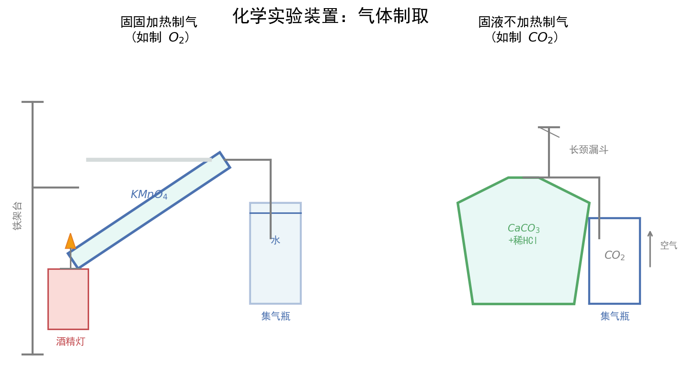

| 字段 | 内容 |
|---|---|
| 来源 | 人教版必修第一册 第二章 + 广东选择性考试 |
| 时间标签 | #高一筑基 |
| 难度 | ★★★☆☆ |
| 状态 | ⚠️待强化 |
| 试卷来源 | #广东选择性考试 |
| 广东考情 | 考查频率：高频（近5年广东卷每年必考，常作为计算基础渗透于工艺流程、实验题中）；难度定位：基础~中档（单独考查较基础，综合考查时计算量增大）；特色描述：广东卷常将物质的量计算融入工艺流程题（如矿石提纯中的产率计算）和实验探究题（如滴定分析），需熟练以物质的量为中心建立各物理量之间的联系；赋分提示：基础计算题是赋分"基本盘"，确保不丢分，阿伏伽德罗常数陷阱题是广东卷常设考点 |
以物质的量为中心的计算关系：
n = N / Nₐ n = m / M n = V(气) / Vₘ n = c·V(溶液)
┌── N（粒子数）
│ n = N/Nₐ
│
m（质量） ←── n（物质的量）──→ Vₘ（气体体积）
n = m/M │ n = V/Vₘ
│
└── c·V（溶液中溶质）适用条件：Vₘ = 22.4 L/mol 仅适用于标准状况下的气体；溶液浓度计算时V必须是溶液体积注意事项：① 标况下非气态物质：H₂O、SO₃、Br₂、CCl₄、苯、HF等；② 混合气体Vₘ仍适用；③ 溶液稀释/浓缩：c₁V₁ = c₂V₂（溶质物质的量守恒）
| 陷阱 | 典型表述 | 正误辨析 |
|---|---|---|
| 陷阱1：标况状态 | 标况下22.4L H₂O含Nₐ个分子 | ❌ 标况下水为液态，不能用Vₘ |
| 陷阱2：物质组成 | 1mol Na₂O₂含2Nₐ个离子 | ❌ 含2Na⁺和1O₂²⁻，共3Nₐ个离子 |
| 陷阱3：水解/电离 | 1L 0.1mol/L CH₃COOH含0.1Nₐ个H⁺ | ❌ 弱酸部分电离，H⁺远小于0.1Nₐ |
| 陷阱4：可逆反应 | 1mol N₂与3mol H₂反应转移6Nₐ电子 | ❌ 合成氨可逆，实际转移小于6Nₐ |
| 陷阱5：共价键数 | 1mol SiO₂含4Nₐ个Si-O键 | ✅ 每个Si与4个O形成4个共价键 |
| 陷阱6：同位素 | 18g D₂O含Nₐ个分子 | ❌ D₂O摩尔质量20g/mol，应为0.9mol |
| 陷阱7：最简式 | 46g NO₂含Nₐ个分子 | ❌ 存在2NO₂⇌N₂O₄平衡，分子数小于Nₐ |
| 陷阱8：胶体/晶体 | 1mol FeCl₃水解生成Nₐ个Fe(OH)₃胶粒 | ❌ 一个胶粒由多个Fe(OH)₃聚集而成，胶粒数远小于Nₐ |
阿伏伽德罗常数判断口诀："标况气态才用22.4，溶液是水不是剂，弱质水解要考虑，可逆反应不完全，结构组成数清楚，胶粒聚集多个算"
